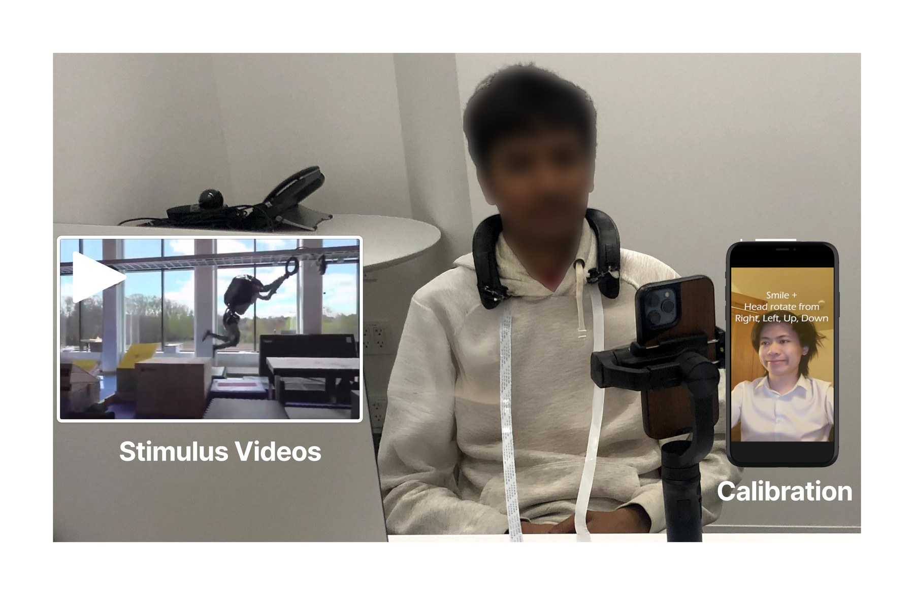
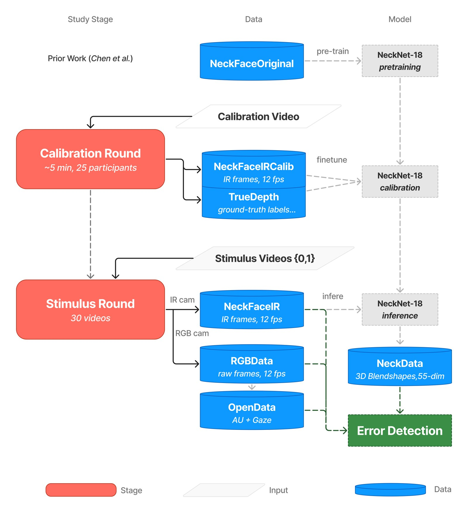
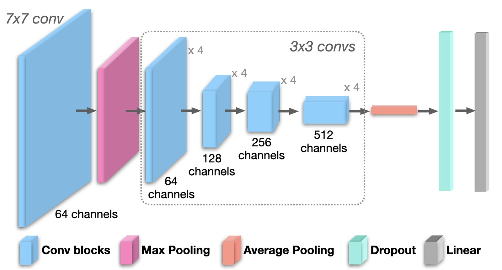
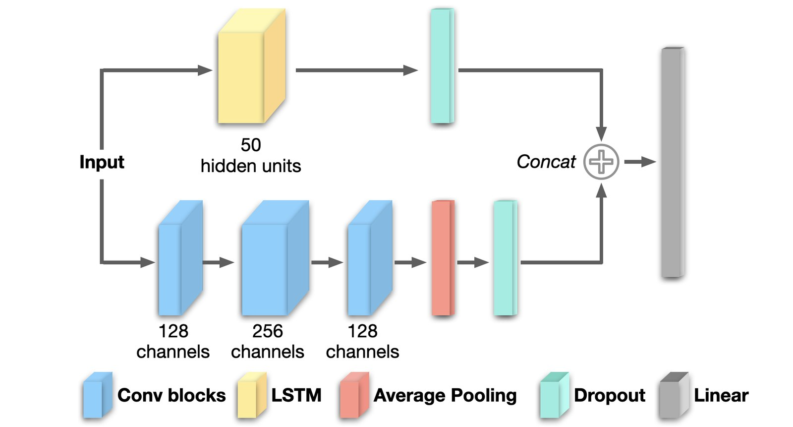

“Why the face?” Exploring Robot Error Detection Using Instrumented Observer Reactions
Abstract
How do humans recognize and rectify social missteps? We achieve social competence by looking around at our peers, decoding subtle cues from others around us — a raised eyebrow, a laugh — to evaluate the environment and our actions. Robots, however, struggle to perceive and make use of these nuanced reactions. By employing a novel neck-mounted device that records facial expressions from the chin region, we explore the potential of previously untapped data to capture and interpret human responses to robot error. First, we develop NeckNet-18, a 3D facial reconstruction model to map the reactions captured through the chin camera onto facial points and head motion. We then use these facial responses to develop a robot error detection model which outperforms standard methodologies such as using OpenFace or video data, generalizing well especially for within-participant data. Through this work, we argue for expanding human-in-the-loop robot sensing, fostering more seamless integration of robots into diverse human environments, pushing the boundaries of social cue detection and opening new avenues for adaptable robotics.
Key Findings
User Study
30 participants wore NeckFace, a neckband with two infrared cameras that view the chin, cheeks and neck from below (here driven by a single Raspberry Pi 4B). In a ~5-minute calibration round, participants copied facial movements shown on a video while an iPhone's TrueDepth camera recorded ground-truth Blendshapes. In the stimulus round, they watched 30 short videos (10 human failures, 10 robot failures, 10 controls; 13.69 ± 7.77 s on average) in random order, while NeckFace and a participant-facing webcam recorded their reactions. Data from 25 participants was retained after excluding sessions with technical or data-quality problems.


Method
1. NeckNet-18: 3D facial reconstruction
A ResNet-18 backbone with a fully-connected decoder maps the pair of IR images to a 55-dimensional vector: 52 ARKit Blendshapes plus head yaw, pitch and roll. It is lighter than the ResNet-34 used in the original NeckNet, which suits our smaller calibration set (5 minutes at 12 fps). The model is pre-trained on the original NeckFace dataset and fine-tuned on calibration data from this study.

2. Error detection from reactions
Reaction windows are labelled error (frames after the error occurs in an error video) or neutral (control videos). We searched the same model families for both NeckData and OpenData (GRU, LSTM, BiLSTM, GRU_FCN, LSTM_FCN, Transformer, MiniRocket, gMLP, InceptionTime/Plus, and an MLP following prior work), and ResNet34 for the raw-frame datasets.

Data sources compared
| Dataset | What it is | Neutral (0) | Error (1) | Total frames |
|---|---|---|---|---|
| NeckData | 55-dim. Blendshapes + head rotation, reconstructed from NeckFace IR by NeckNet-18 | 51,745 | 37,815 | 89,560 |
| OpenData | 49 OpenFace action unit, gaze and pose features from the webcam | 51,580 | 37,815 | 89,395 |
| NeckFaceIR | Raw NeckFace IR frames | 51,745 | 37,815 | 89,560 |
| RGBData | Raw webcam frames | 51,578 | 37,815 | 89,393 |
All datasets are sampled at 12 fps (RGB-derived data downsampled from 30 fps and matched to NeckData timestamps). Grey rows come from the RGB webcam.
Results
3D facial reconstruction (NeckNet-18)
5-fold cross-validation over temporally non-overlapping calibration data, mean ± SD. Blendshapes range from 0 to 1000. The original NeckFace paper reports that reconstructions with MAE under 40 look visually similar to the ground truth.
| Model | MAE, facial Blendshapes | MAE, head rotation |
|---|---|---|
| NeckNet-18 (this work; 5 min calibration, 12 fps) | 34.0 ± 6.9 | 7.0 ± 1.3 |
| Original NeckNet (Chen et al., 2021; 7 min calibration, 30 fps) | 25.6 ± 5.1 | 3.1 |
Error detection
Test-set performance of the best model per training protocol and data source (macro-averaged). Cross-participant rows are mean ± SD over the test sets of a 5-fold, participant-level cross-validation (17 training, 5 validation and 3 test participants per fold; no participant appears in more than one of the training, validation and test sets in an iteration). Single-participant rows train on a random 5% or 45% of each participant's stimulus-round frames and test on the rest of that participant's data, mean ± SD over all 25 participants.
| Model | Dataset | Accuracy | Precision | Recall | F1 |
|---|---|---|---|---|---|
| Time-series models: cross-participant | |||||
| gMLP | OpenData | 0.606 ± 0.051 | 0.563 ± 0.025 | 0.632 ± 0.072 | 0.535 ± 0.015 |
| GRU_FCN | NeckData | 0.658 ± 0.061 | 0.649 ± 0.060 | 0.667 ± 0.052 | 0.637 ± 0.070 |
| Pre-trained on one dataset, fine-tuned on the other: cross-participant | |||||
| gMLP | OpenData (fine-tuned) | 0.569 ± 0.040 | 0.547 ± 0.028 | 0.572 ± 0.075 | 0.538 ± 0.019 |
| gMLP | NeckData (fine-tuned) | 0.619 ± 0.057 | 0.597 ± 0.042 | 0.619 ± 0.057 | 0.589 ± 0.047 |
| Single-participant: 5% of the participant's data for training | |||||
| InceptionTime | OpenData | 0.788 ± 0.049 | 0.782 ± 0.048 | 0.785 ± 0.050 | 0.782 ± 0.049 |
| GRU_FCN | NeckData | 0.847 ± 0.048 | 0.840 ± 0.048 | 0.846 ± 0.050 | 0.842 ± 0.049 |
| Single-participant: 45% of the participant's data for training | |||||
| InceptionTime | OpenData | 0.965 ± 0.019 | 0.963 ± 0.020 | 0.965 ± 0.020 | 0.964 ± 0.020 |
| GRU_FCN | NeckData | 0.955 ± 0.028 | 0.954 ± 0.029 | 0.954 ± 0.029 | 0.954 ± 0.029 |
| Frame-based models: cross-participant | |||||
| ResNet34 | RGBData | 0.515 ± 0.025 | 0.505 ± 0.020 | 0.505 ± 0.018 | 0.493 ± 0.023 |
| ResNet34 | NeckFaceIR | 0.530 ± 0.031 | 0.504 ± 0.027 | 0.501 ± 0.016 | 0.474 ± 0.014 |
Grey rows use data from the RGB webcam. Bold marks the higher value within each pair; no significance tests were run, and several differences are within one SD. ResNet34 models were selected on a single fold (see Limitations). Hyperparameter search spaces are listed in the supplementary material.
- Unseen participants: NeckData beats OpenFace features by about 5 points of accuracy and 10 points of F1. Cross-participant accuracy is still modest overall, which reflects how much reactions vary between people.
- Transfer between feature spaces: pre-training on one dataset and fine-tuning on the other did not beat training on either alone. Fine-tuning on NeckData still came out about 5 points ahead of fine-tuning on OpenData.
- Personalization: with only 5% of a participant's data, NeckData reaches 84.7% accuracy, about 6 points above OpenData. With 45%, both exceed 95% and OpenData is about 1 point ahead.
- Raw frames: ResNet34 on raw IR or RGB frames performs only slightly above chance. Models on NeckData are 12–15 points more accurate, which supports the extra reconstruction step.
Scope and Limitations
- The study is a controlled, stationary, video-elicitation paradigm, not live, mobile interaction with a robot. The mobility benefits of a wearable sensor are the motivation for this work, but they remain to be tested in embodied, in-person HRI.
- NeckData and OpenData differ in both sensor (neck-mounted IR vs. frontal RGB) and feature pipeline (NeckNet-18 vs. OpenFace). The comparison cannot isolate which factor drives the difference.
- Cross-participant estimates rest on a small number of test participants per fold and should be read as indicative. We report only the best architecture per protocol, and how far it leads the other architectures was not systematically characterized. Our conclusions concern the data source, not the choice of architecture.
- ResNet34 frame models were selected on a single fold rather than all five, because of their compute cost.
- NeckFace needs per-wearer calibration and is sensitive to lighting, camera placement and accessories such as large earrings, which led to several exclusions.
Code and Materials
Everything is in the GitHub repository:
| Folder | Contents |
|---|---|
code_neckface_training/ | NeckNet-18 data preparation, training and inference |
code_preprocessing/ | Building the IR, RGB and OpenFace datasets from the raw recordings; feature analysis |
code_timeseries/ | Time-series error detection models (tsai models, GRU/LSTM, Transformer) and participant-level splits |
code_rgb/ | Frame-based ResNet error detection models |
stimulus_dataset_information.xlsx | The 30 stimulus videos: sources, type, error timestamps |
Pre-trained NeckNet weights (neckface_us_full_model.tar) can be
downloaded from Cornell Box.
For building the NeckFace hardware, see Chen et al., 2021.
Related Work
- NeckFace: Continuously Tracking Full Facial Expressions on Neck-mounted Wearables. Chen et al., IMWUT 2021.
- The Bystander Affect Detection (BAD) Dataset for Failure Detection in HRI. Bremers et al., 2023.
- Using Social Cues to Recognize Task Failures for HRI: Overview, State-of-the-Art, and Future Directions. Bremers et al., 2024.
- A Study on Domain Generalization for Failure Detection through Human Reactions in HRI. Parreira et al., 2024.
- “Bad Idea, Right?” Exploring Anticipatory Human Reactions for Outcome Prediction in HRI. Parreira et al., RO-MAN 2024.
- ERR@HRI 2024 Challenge: Multimodal Detection of Errors and Failures in Human-Robot Interactions. Spitale et al., 2024.
BibTeX
@article{parreira2026whyface,
title = {``Why the face?'': Exploring Robot Error Detection Using Instrumented Observer Reactions},
author = {Parreira, Maria Teresa and Zhang, Ruidong and Gowdru Lingaraju, Sukruth and Bremers, Alexandra and Fang, Xuanyu and Ramirez-Aristizabal, Adolfo and Saha, Manaswi and Kuniavsky, Michael and Zhang, Cheng and Ju, Wendy},
journal = {ACM Transactions on Human-Robot Interaction},
year = {2026},
publisher = {ACM}
}